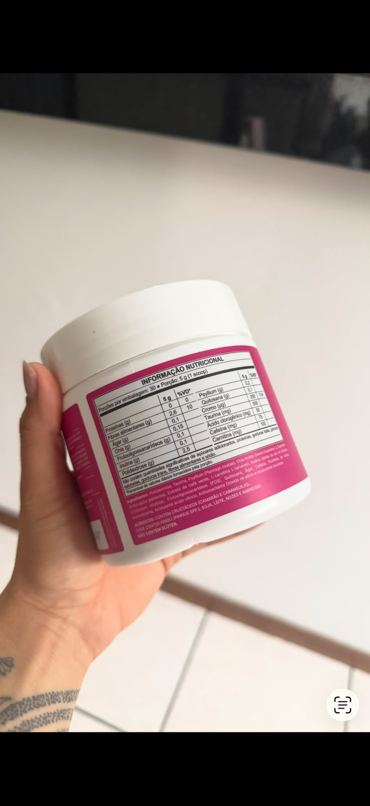
Motivo 1
Dose real, não enfeite de rótulo
Cada ingrediente do Diva tem dose e %VD abertos no rótulo. 2,6 g de fibras, 500 mg de taurina, 100 mg de carnitina e 250 µg de cromo, que é 714% do valor diário.
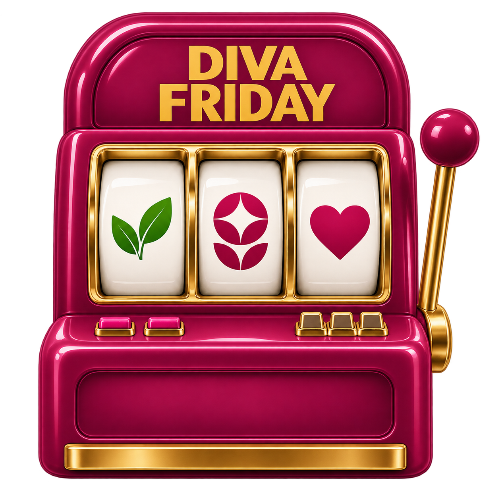
Se algum desses faz parte do seu dia, o Diva foi pensado pra sua rotina.
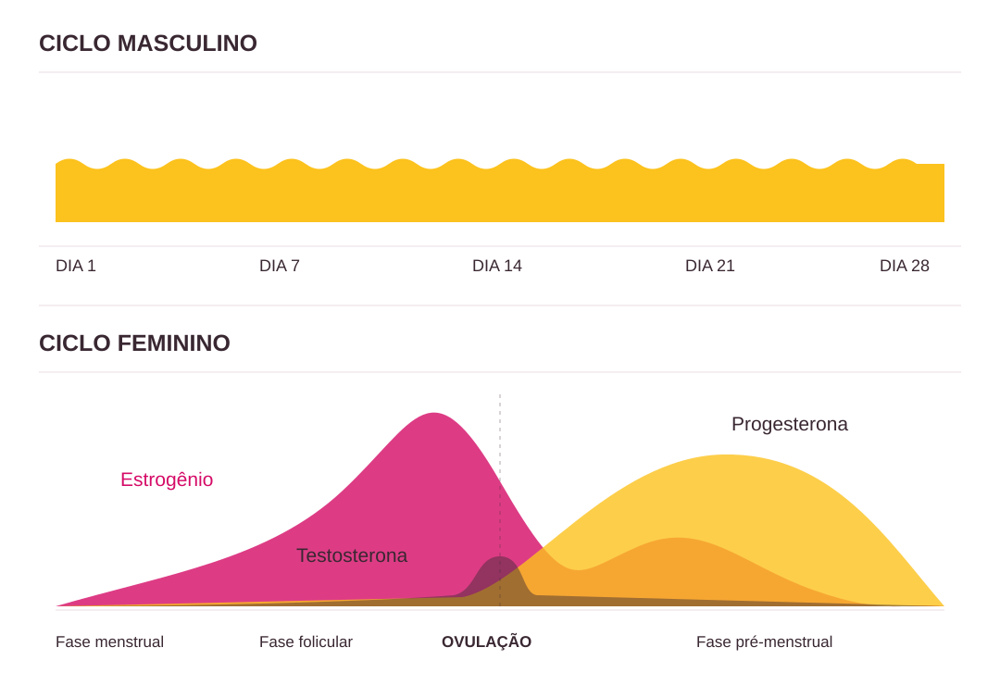
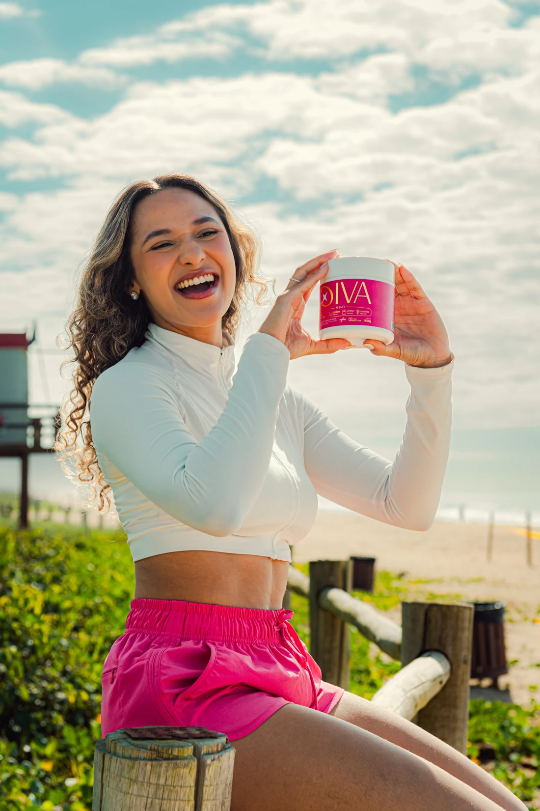
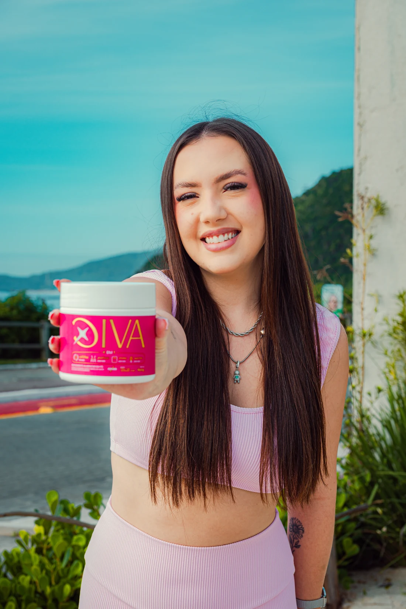
Inchaço, compulsão por doce, desânimo, pele sem brilho. Parecem problemas diferentes, mas muitos deles começam no mesmo lugar. No seu intestino. Quando a rotina pesa, com pouca fibra, muito açúcar, estresse e noites mal dormidas, o intestino perde o ritmo.
Tem dia que trava, tem dia que acelera. A barriga incha, a digestão fica pesada e o corpo inteiro sente.
É aí que a candidíase costuma aparecer de novo. Antibiótico, estresse, alimentação cheia de açúcar e um corpo fora do equilíbrio criam o cenário perfeito pra ela voltar.
Você trata, melhora e, pouco tempo depois, ela está lá outra vez.
O que você precisa não é de mais um laxante. É de uma rotina que ajude o seu corpo a encontrar o equilíbrio todos os dias.
O Diva foi feito pra isso.
O psyllium é uma fibra natural que ajuda o intestino a voltar pro ritmo certo e dá saciedade. O cromo picolinato entra na fórmula pensando em quem convive com aquela vontade de doce que não passa, e menos açúcar no prato é um cuidado a mais pra quem sofre com candidíase.
O chá verde, o café verde e a taurina trazem disposição pro seu dia. E a espirulina é fonte de nutrientes pro seu corpo.
Um copo por dia, com sabor suave e sem açúcar adicionado. Junto com o acompanhamento da sua ginecologista, o Diva é o cuidado diário que faltava na sua rotina.
A rotina que o seu corpo pedia existe. É Diva.
Quero meu corpo desinchadoVocê sabia que a maioria das inflamações começam no intestino? Quando a parede intestinal está comprometida (intestino permeável), toxinas e partículas de alimentos escapam para a corrente sanguínea, causando inflamação silenciosa em todo o corpo.
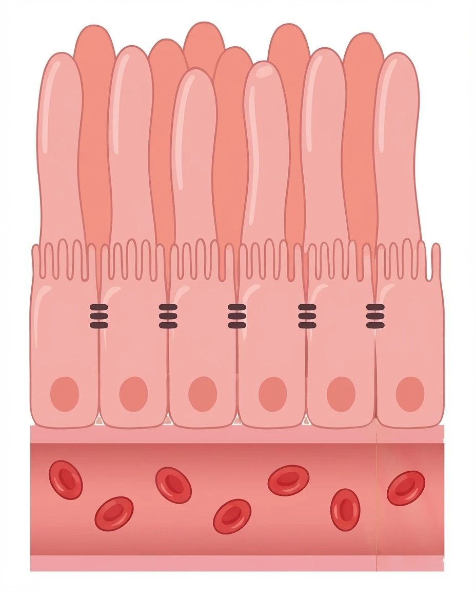
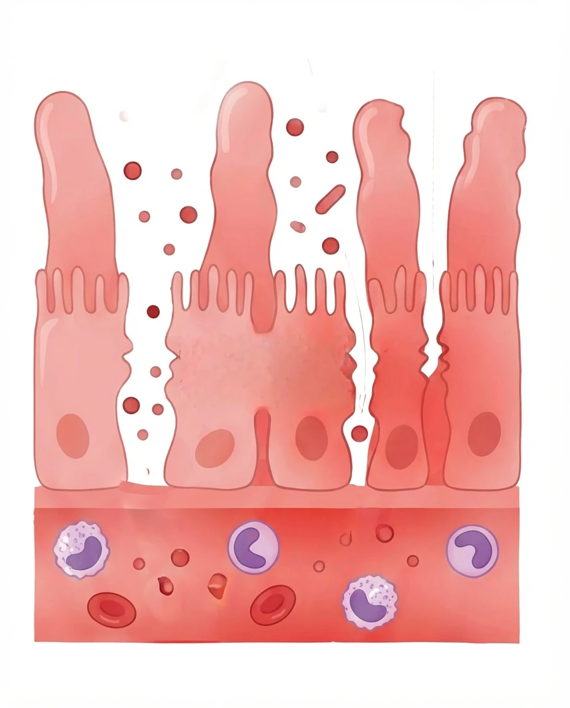
Diva atua reparando a parede intestinal, nutrindo as bactérias boas e restaurando o equilíbrio da sua flora de dentro pra fora.
O Diva é um pozinho que faz um Detox funcional em seu corpo.
Quero meu corpo desinchadoMulheres que colocaram o Diva na rotina:
Fórmula aberta, dose real e um ritual que cabe na rotina.

Cada ingrediente do Diva tem dose e %VD abertos no rótulo. 2,6 g de fibras, 500 mg de taurina, 100 mg de carnitina e 250 µg de cromo, que é 714% do valor diário.
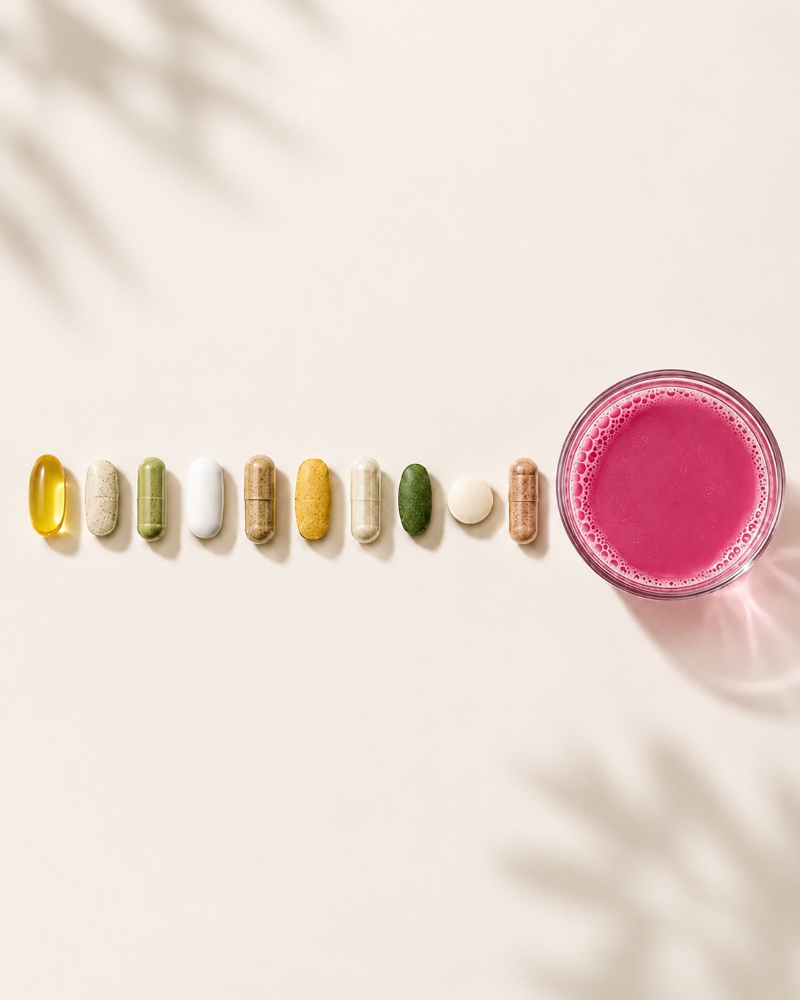
Seis fontes de fibra, com polidextrose, psyllium, chia, inulina, FOS e ágar. E mais taurina, L-carnitina, cromo picolinato, café verde, cafeína, espirulina e quitosana, numa dose só.
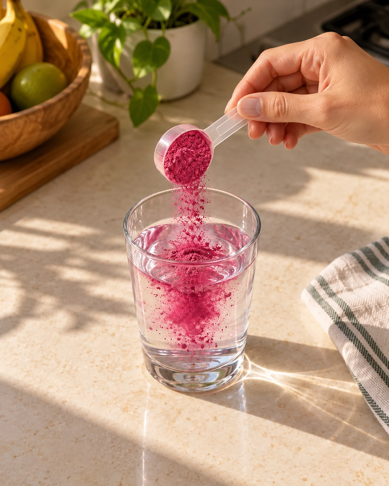
Nada de engolir um monte de cápsulas por dia. É 1 scoop em água, sem açúcar adicionado, e pronto.
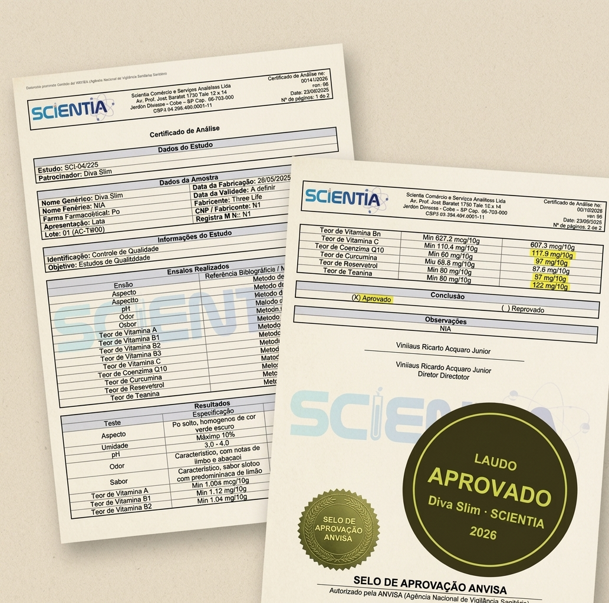
Não contém glúten e não tem açúcar adicionado. Todos os ingredientes e alérgenos estão abertos no rótulo. O produto final é auditado pelo laboratório independente, e é o 1° do Brasil na categoria notificado sob as normas da Anvisa.
“Peraí, minha barriga está diferente.”
As fibras do psyllium começam a ajudar o intestino a encontrar o ritmo. A digestão fica mais leve e aquele inchaço do fim do dia começa a dar trégua.
“Estou adorando essa rotina.”
Com psyllium, cromo picolinato, chá verde e café verde, o Diva ajuda a dar saciedade, segurar a vontade de doce e trazer mais disposição pro seu dia. Aquele copo da manhã começa a virar hábito.
“Eu também mereço me sentir bem no meu corpo.”
O intestino em ritmo, menos inchaço e mais energia mudam o jeito que você vive o dia. Sua rotina começa a acompanhar o que o seu corpo pede.
“Meu corpo merece essa atenção.”
Menos dieta maluca, mais constância. As fibras que dão saciedade ajudam no emagrecimento, e o resultado vem de cuidar um pouco todos os dias.
“Cuidar de mim virou prioridade.”
Você não precisa de solução milagrosa pra se sentir bem no próprio corpo. Precisa de uma rotina que você consiga manter, com sabor suave e sem açúcar adicionado.
“Agora, eu também sou prioridade.”
Seu corpo muda. Seu cuidado acompanha. Faça do Diva parte da sua rotina diária.
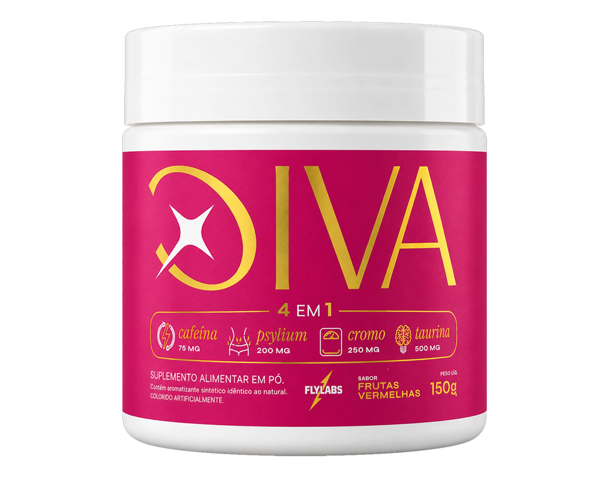
Tem desejos por doces difíceis de controlarAcorda sem energia ou focoLida com intestino presoQuer emagrecer naturalmenteSofre com inchaço constanteBusca praticidadeSente a pele opacaNão aguenta mais a candidíaseA perna pesada e doendo por causa do lipedemaGanhe um desconto exclusivo e comece agora mesmo a sua transformação.
Frete Grátis + Brindes especiais120 dias de cuidado
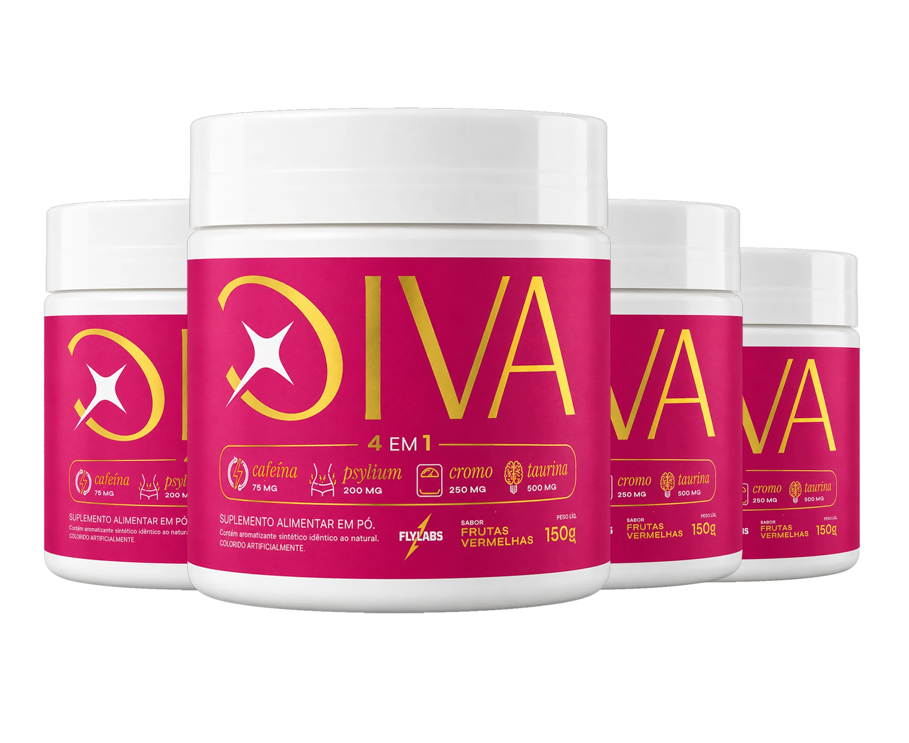
DeR$ 81,80 por pote
60 dias de cuidado
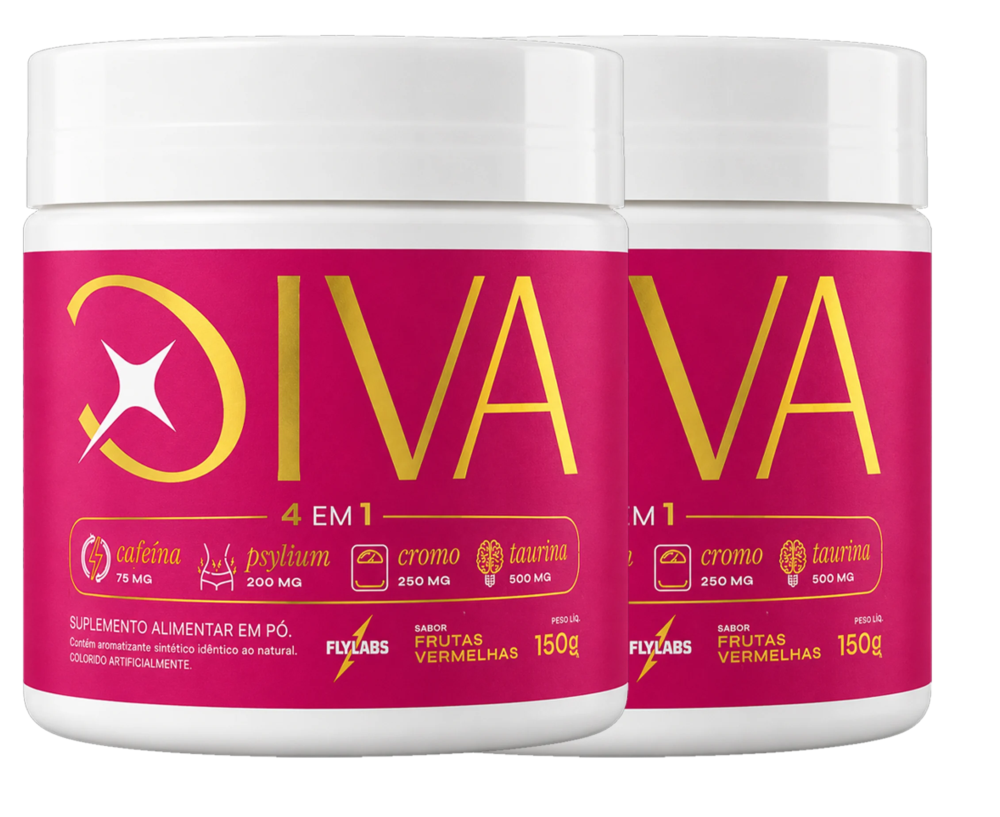
DeR$ 118,58 por pote
30 dias de cuidado
DeR$ 159,30 por pote
Pagamento e parcelamento disponíveis no checkout. Confira as condições antes de concluir.
A USEDIVA nasceu de uma história real. Da história da Mallu, de uma mulher que sempre encontrou no movimento, no treino e no cuidado com o corpo uma parte importante da sua identidade.
Treinar fazia parte da sua rotina. Era mais do que uma atividade física: era o momento dela, uma forma de cuidar da saúde, da autoestima e de se sentir bem consigo mesma.
Mas, de repente, tudo mudou.
Uma bactéria intestinal interrompeu aquela rotina que ela tanto amava. Vieram os desconfortos digestivos, a falta de disposição, as mudanças no corpo, o ganho de peso e, junto com tudo isso, uma sensação que foi muito além do físico: a de não se reconhecer mais.
Mallu queria voltar a se sentir bem. Queria recuperar sua disposição, sua confiança e, principalmente, voltar a ter uma relação leve com o próprio corpo.
Foi durante esse processo que ela começou a entender a importância de cuidar do intestino. Na busca por melhorar sua saúde intestinal, encontrou nas fibras, especialmente no psyllium, uma grande aliada.
Mas existia um problema: o sabor.
Apesar de reconhecer os benefícios, tomar psyllium todos os dias era um verdadeiro sacrifício. A textura, o gosto e a dificuldade de incorporar aquele hábito à rotina faziam com que algo que deveria ser simples se tornasse um esforço diário.
E foi justamente aí que nasceu uma ideia.
E se cuidar do intestino não precisasse ser uma obrigação? E se um hábito saudável pudesse ser também um momento de prazer?
Mallu começou a imaginar um produto que reunisse tudo aquilo que ela procurava: fibras para auxiliar no funcionamento intestinal e na saciedade, probióticos para complementar o cuidado com a saúde intestinal e, acima de tudo, um sabor tão gostoso que desse vontade de consumir todos os dias.
Ela não queria criar apenas mais um suplemento. Queria transformar a experiência de cuidar de si.
Assim nasceu o Diva.
Uma fórmula pensada para unir funcionalidade, sabor e praticidade. Um produto que surgiu de uma necessidade pessoal, mas que carrega o desejo de ajudar outras mulheres a construírem uma rotina de autocuidado mais leve e prazerosa.
O Diva representa uma mudança de perspectiva: não precisamos encarar o cuidado com a saúde como um sacrifício. Ele pode ser gostoso, fazer parte da nossa rotina e se tornar um momento que escolhemos repetir.
E foi assim que uma dificuldade se transformou em uma ideia, uma ideia se transformou em um produto e um produto deu origem a uma marca.
A USEDIVA nasceu para transformar o autocuidado em um hábito que dá prazer.
Porque cuidar de você não precisa ser difícil. E você merece gostar de cada parte desse processo.
USE DIVA. SEJA SUA MELHOR VERSÃO.
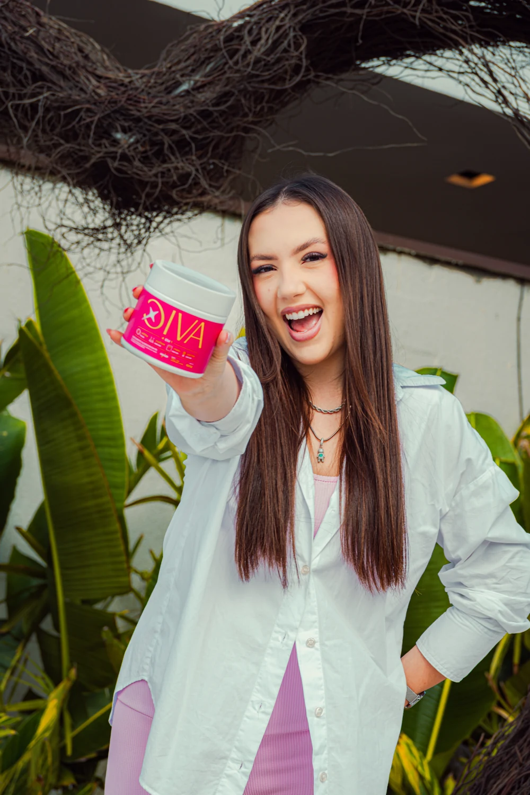
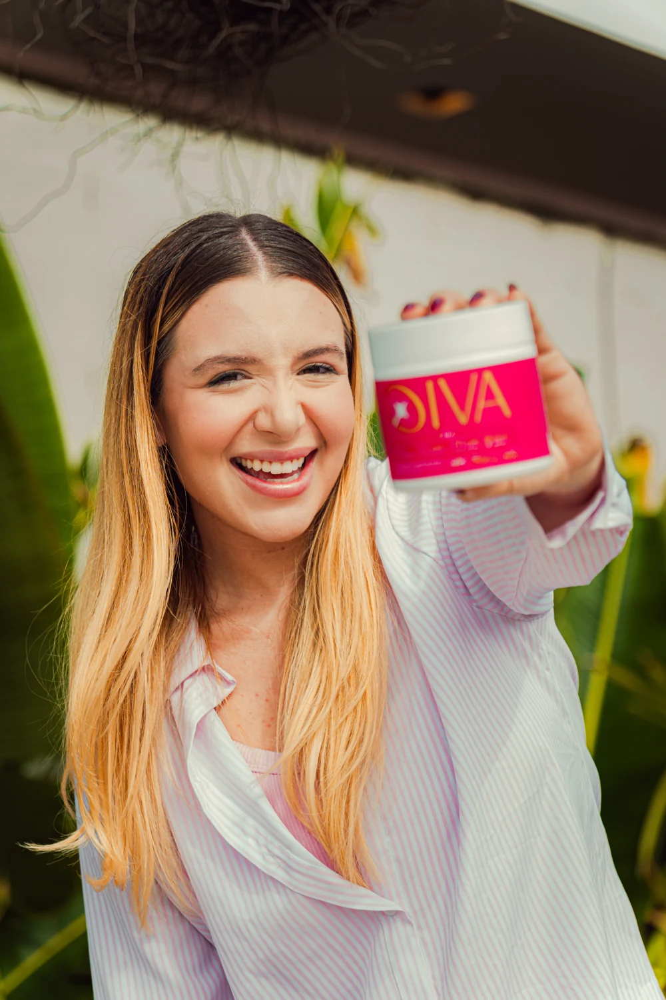
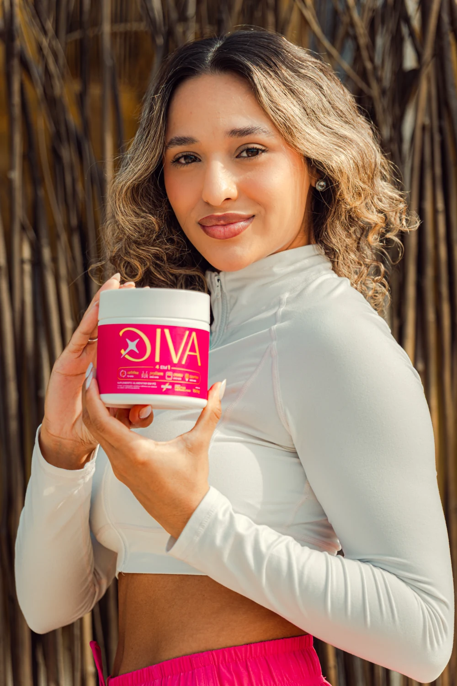
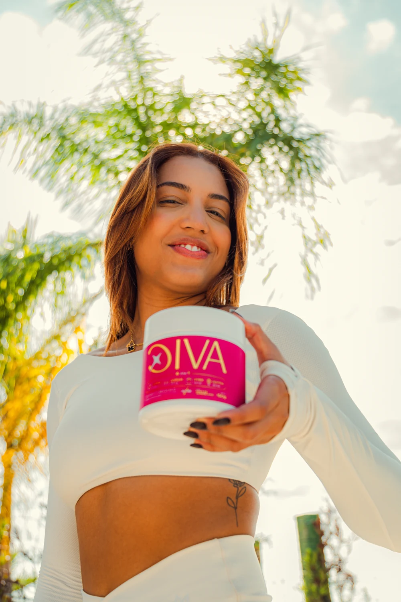
Já faz quase um mês que estou usando o Diva e senti muita diferença na minha disposição, meu intestino começou a funcionar bem melhor. Eu também estava com uma barriguinha que estava me incomodando e o Diva me ajudou a eliminar. Como estou mais saciada, estou comendo menos e sentindo a diferença. E isso tudo em menos de um mês!!
Eu nunca imaginei que regular o intestino faria tanta diferença na minha vida. Depois de começar a tomar sejadiva, minha digestão ficou muito mais tranquila, meu corpo desinchou e até aquela sensação de peso foi embora. Hoje me sinto mais saudável e confiante não fico mais sem ele!
No começo fiquei com receio por ser uma marca nova, mas como sempre sofri com intestino preso, resolvi testar... e foi incrível, jurooo o Diva tocou na minha dor e foi tão fácil introduzir ela na minha rotina! Costumo dizer que é o meu drink da alegria... já não vivo sem... e o sabor é uma delícia
O Diva ajudou muito a regular o meu intestino, em dois dias de uso já começou a funcionar, me ajuda também a diminuir a minha retenção de líquido, inchaço, me sinto muito mais disposta e animada para as minhas tarefas do dia e além de ser uma delícia. Tô amandooo!
Eu amei! Para mim o maior resultado é que achei super diurético, e me deu muito mais disposição, sem falar que melhorou a candidiase! o produto já faz parte da minha rotina.
O Seja Diva me fez sentir realmente mais leve, como o próprio nome do produto já diz. Senti diferença na diminuição do inchaço do meu corpo e passei a ir regularmente ao banheiro. Sem contar que o sabor é uma delícia, estou tomando o de abacaxi e é leve, docinho na medida certa, eu amei!
Tento manter uma alimentação equilibrada, mas meu intestino nunca funcionou muito bem. Depois que comecei a usar o suplemento percebi o quanto está me fazendo bem, pois estou indo ao banheiro diariamente, me sinto desinchada e é claro com muito mais disposição. Com certeza irá fazer parte da minha rotina pra sempre.
Eu amei o produto, ele realmente foi muito bom pra mim, percebi muito os efeitos. Eu já estava com a expectativa alta depois de tudo o que vi no Instagram, mas depois de testar superou mesmo as minhas expectativas!
Nunca tinha provado nada como o Seja Diva antes! O que eu mais amo é a praticidade, e ele tem me ajudado demais com o inchaço abdominal e o funcionamento do meu intestino, que sempre foi super preguiçoso. Tô amando ter ele na minha rotina e, sinceramente, não quero mais ficar sem!
Meu corpo mudou em poucos dias de uso diário do Seja Diva, entre primeiro e segundo dia, eu já senti uma vontade muito grande de ir ao banheiro fazer xixi, em torno de umas 8 vezes ao dia, conforme foi passando os dias eu já notei a diferença na barriga, desinchou um pouco e aquela vontade imensa que eu tenho de comer doce, diminuiu bem, ou seja, a quantidade que eu comia diariamente de doce, tbm diminuiu. Então eu estou sentindo a diferença em vários aspectos e inclusive na minha disposição, isso que estou utilizando o produto há 15 dias. Estou muito satisfeita, e com certeza eu estou fazendo o uso contínuo do sejadiva, vou ver mais resultados.
Estoque limitado — últimas unidades disponíveis neste valor. Preço promocional válido apenas enquanto durar o estoque atual.
Use o Diva Slim por 30 dias. Se não sentir o intestino regulando, o inchaço reduzindo e o corpo respondendo — devolvemos 100% do seu dinheiro. Sem burocracia. Sem pergunta. Sem enrolação. Você só perde se não tentar.
Use o Diva Slim por 30 dias. Se não sentir o intestino regulando, o inchaço reduzindo e o corpo respondendo — devolvemos 100% do seu dinheiro. Sem burocracia. Sem pergunta. Sem enrolação. Você só perde se não tentar.
A maioria das clientes relata barriga menos dura e intestino mais regular já na primeira semana. O inchaço visível começa a ceder entre 14 e 21 dias. A queima de gordura localizada se torna perceptível a partir do segundo mês.
O Diva é um suplemento alimentar e não substitui uma alimentação equilibrada. Combine o uso conforme o rótulo com hidratação e hábitos adequados às suas necessidades.
Fibras e probióticos não são a mesma coisa. Para saber exatamente o que está presente no Diva, consulte a lista de ingredientes da embalagem. Não substitua um produto recomendado pelo seu profissional sem orientação.
Leve a lista de ingredientes ao profissional que acompanha você antes de usar. A indicação depende do seu quadro, dos medicamentos em uso e das advertências do produto.
Na Diva Friday, o kit de quatro potes tem o maior desconto: 20%. O preço por pote fica em R$ 81,80, e o kit inclui entrada no Clube Diva de desafio. Escolha a quantidade adequada à sua rotina.
A embalagem apresentada informa cafeína na composição. A sensibilidade varia de pessoa para pessoa. Confira a quantidade, as advertências e a indicação de uso no rótulo; em caso de dúvida, consulte um profissional de saúde.
Misture o produto em água, respeitando a porção e o modo de preparo indicados na embalagem. Não exceda a recomendação diária de consumo.
A campanha oferece garantia de satisfação de 30 dias. Solicite atendimento pelo canal informado na confirmação da compra, com o número do seu pedido.
100% aprovado e dispensado pela Anvisa conforme a legislação vigente de suplementos naturais.
Fórmula 100% pura, sem efeitos colaterais e sem contraindicações.
Cada ingrediente passou por testes rigorosos de eficácia e pureza.
Qualidade atestada pelos mais rígidos padrões internacionais.
Fórmula asiática que regenera o intestino e drena a gordura enquanto você dorme.
Quero meu corpo desinchado